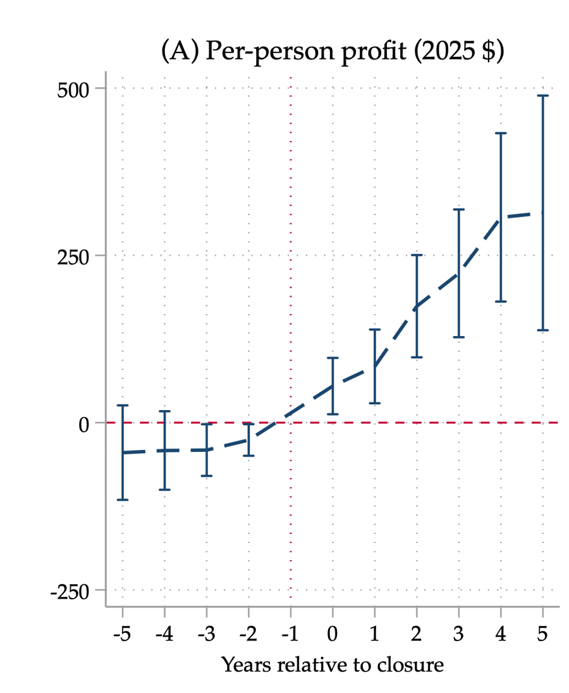

Deadpooling: Strategic Lock-In in the Medigap Market
Abstract
The Medigap market prevents adverse selection by locking enrollees in to their plan; after an initial enrollment window, insurers may reject applicants who fail medical underwriting, so most enrollees have only one opportunity to shop. We show that insurers profit from this lock-in through corporate structure. Linking two decades of Medigap filings to parent–subsidiary ownership records, we document deadpooling. In this practice, one subsidiary closes a plan to new enrollees, a sister subsidiary opens a replacement for healthy applicants, and premiums rise on the enrollees left behind. From 2006–2020, 17.6% of Medigap life-years are spent in plans that deadpool. Using a Callaway–Sant’Anna staggered difference-in-differences design, we find that an enrollee who stays in their plan pays $762 more in premiums five years after closure than if their plan had not closed. Each year’s closures transfer $64.7 million from seniors to insurer profits and cost seniors $108.3 million in lost consumer surplus, including switching costs and lost coverage. Overall, seniors lose $1.67 in consumer surplus per dollar of insurer gain. With variation from the staggered adoption of switching laws in six states, we find that allowing enrollees to switch plans annually reduces enrollment in deadpooling plans by 18%. A calibrated model shows that policies that do not rely on consumer attention may better improve market outcomes.